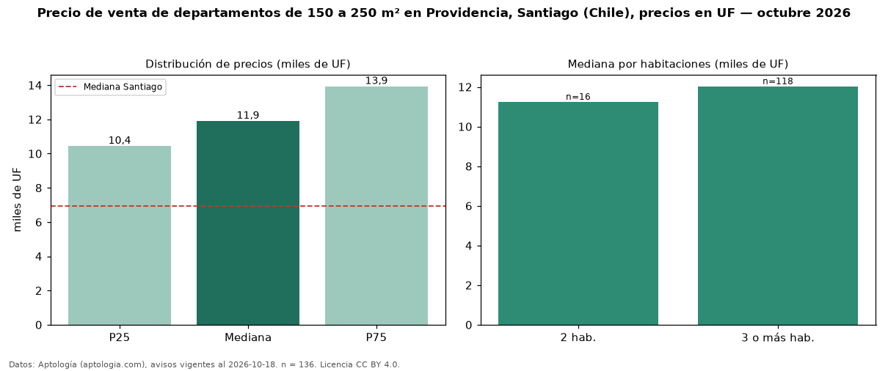

Precio de venta de departamentos de 150 a 250 m² en Providencia, Santiago (Chile), precios en UF — octubre 2026
UF 11.900 es el precio mediano de departamentos de 150 a 250 m² en venta en Providencia, Santiago (Chile) (n = 136 avisos). Eso es 49 % más que la mediana de todos los departamentos en venta de Providencia (UF 7.990, n = 2.118); este segmento reúne el 6 % de esos avisos. Por metro cuadrado, la mediana es UF 67,73/m² (n = 136), 22 % por debajo del conjunto de referencia (UF 87,04/m²). El área mediana anunciada es 170 m². El segmento con más oferta es el de 3 o más habitaciones (118 avisos, mediana UF 12.026); pasar de 2 habitaciones a 3 o más habitaciones cambia la mediana +7 %. La mediana de todos los departamentos en venta de Santiago es UF 6.950 (+71 % de diferencia). La mitad central de los avisos va de UF 10.435 a UF 13.925 (razón 1,3), una dispersión baja. Datos: Aptología (aptologia.com), CC BY 4.0 — https://www.aptologia.com/cl/venta/santiago/providencia. Archivos: PDF, CSV con las cifras y gráfica PNG.

| Avisos únicos | 136 |
|---|---|
| Percentil 25 | COP 10.435 |
| Mediana | COP 11.900 |
| Percentil 75 | COP 13.925 |
| Mediana por m² | COP 67 |
Fuente: avisos vigentes de portales inmobiliarios recopilados por Aptología, deduplicados (mínimo 30 avisos únicos por celda). Precios pedidos, no cerrados. Fecha: 2026-10-18.